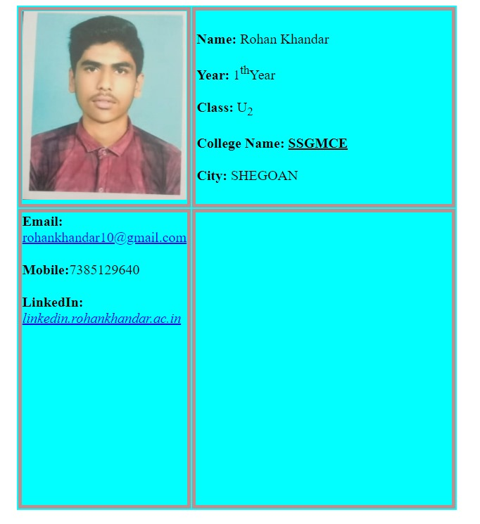
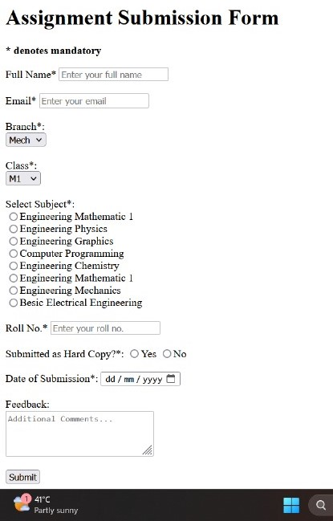

ABOUT WEB DEVELOPMENT
To embark on website development, I initially delved into webpage templates, even though my background lies in Basic Sciences, making this domain unfamiliar territory. Beginning with downloading a template, I experimented with editing various elements such as taglines, headers, footers, and more, discovering the intricacies of HTML. The following day, our instructor supplemented my learning with a concise video lecture on HTML basics, recommending resources like W3Schools. This guided me through understanding HTML syntax and its practical applications, laying a solid foundation for my journey into web development.
To construct a website, a foundational understanding of HTML, CSS, and JavaScript is essential. HTML, which stands for HyperText Markup Language, serves as the standard markup language for web pages, delineating their structure through a series of elements represented by tags enclosed in angle brackets. Key elements like and play distinct roles in an HTML
Having assimilated the fundamentals from resources like W3Schools and employing tools such as the Bracket text editor, I embarked on crafting my webpage. Bracket's features, including Inline Editor, Live Preview, and Preprocessor support, expedited the development process. After composing the HTML code, I saved it and previewed the webpage in a web browser, gratified by the visual
Assignment 1 Resume
DAY1
On Day 1 of learning basic HTML and CSS, you likely grasped fundamental concepts essential for web development. You might have learned how to structure content using HTML elements like for headings, for paragraphs, and for divisions. Additionally, you might have explored CSS for styling, understanding how to use selectors, properties, and values to change colors, fonts, and layout. By combining HTML for structure and CSS for presentation, you can create visually appealing and well-organized web pages. Practice and experimentation will reinforce these foundational skills as you progress in your learning journey. Creating a resume using HTML and CSS involves several steps to ensure a professional and well-structured document. Here's a breakdown of the process Assignment 2 Buttons
To create a button in HTML, use the element. Specify the button's content within the opening and closing tags. You can also include attributes like type to define the button's behavior (e.g., submit, reset, or button), id for identification in CSS or JavaScript, and class for styling purposes. Here's a concise example This code snippet creates a button with the text "Click me," a unique identifier "myButton," and a class "btn-style" for custom styling. Adjust attributes as needed to suit your requirements.
DAY2
Certainly! Here's a list of various HTML tags and CSS keywords commonly used in web development:HTML Tags:
1. html: Defines the root of an HTML.
2. head: Contains metadata about the HTML document, such as title, stylesheets, and scripts.
3. title: Sets the title of the HTML document displayed in the browser's title bar or tab.
4. body: Contains the content of the HTML document, including text, images, links, and other elements.
5. h1, h2, h3, h4, h5, h6: Headings of different levels, with h1 being the most important.
6. p: Represents a paragraph of text.
7. a: Creates a hyperlink to another webpage or resource.
8. img: Embeds an image in the HTML document.
9. ul, ol, li: Used for creating unordered and ordered lists, with list items represented by li tags.
10. div: Defines a division or section in an HTML document, often used for layout purposes.
11. span: Inline container used to apply styles or manipulate text.
12. form, input, button: Elements used to create forms for user input and interaction.
13. table, tr, td, th: Tags for creating tables and defining table rows, cells, and headers.
14. iframe: Embeds another HTML document within the current document.
Assignment 3 form
Creating a form using HTML and CSS involves several steps to design and style an interactive input interface for users. Here's a detailed description of the process:
1. *Plan Your Form* Determine the purpose of your form and what information you need to collect from users. Identify the different input fields, such as text inputs, checkboxes, radio buttons, dropdowns, and text areas.
2. *HTML Structure*
- Begin by creating an HTML file and define the basic structure with !DOCTYPE html and html tags.
- Inside the head section, link your CSS file using the link tag for styling.
- Use the form element to create the container for your form.
- Within the form element, include various input elements like input, select, textarea, and other form-related elements like label, button, and fieldset.
3. *Input Fields*
- Use the input element to create text inputs, checkboxes, radio buttons, and other types of input fields. Use the type attribute to specify the type of input (e.g., text, checkbox, radio).
- For each input field, consider adding a label element to provide a description or prompt for the input.
- Group related input fields using the fieldset element and add a legend element to provide a title or caption for the group.
4. *Styling with CSS*
- Create a separate CSS file linked to your HTML document.
- Use CSS selectors to target form elements and apply styles.
- Customize the appearance of input fields, labels, buttons, and other form elements by adjusting properties like color, font, padding, margin, border, and background.
- Apply layout techniques like positioning, flexbox, or grid to arrange form elements in a visually appealing manner.
5. *Validation* (Optional)
- Implement client-side form validation using HTML5 attributes such as required, min, max, pattern, etc., to ensure that users enter valid data.
- Use CSS to style validation messages or indicators to provide feedback to users.
6. *Accessibility*
- Ensure that your form is accessible to all users, including those using assistive technologies like screen readers.
- Use semantic HTML elements and proper labeling to improve accessibility.
- Test your form with keyboard navigation and screen reader tools to ensure usability.
7. *Testing and Refinement*
- Preview your form in different web browsers to ensure cross-browser compatibility.
- Test the functionality of the form by entering various inputs and submitting it.
- Review the design and layout to ensure consistency and alignment with your design goals.
- Make adjustments as needed to improve the overall appearance and usability of the form.
8. *Finalization*
- Once satisfied with the design and functionality, save your HTML and CSS files.
- Double-check for any errors or issues before deploying or integrating the form into your website.
By following these steps, you can create a well-designed and functional form using HTML and CSS that provides an intuitive and user-friendly experience for collecting user input.
DAY3
CSS Keywords:
1. color: Specifies the text color.
2. font-family: Defines the font family for text.
3. font-size: Sets the size of the font.
4. font-weight: Specifies the thickness or weight of the font.
5. margin, padding: Controls the spacing around elements.
6. background-color: Sets the background color of an element.
7. border: Defines the border properties (width, style, and color) of an element.
8. display: Determines how an element is displayed (e.g., block, inline, inline-block).
9. position: Specifies the positioning method for an element (e.g., static, relative, absolute, fixed).
10. float: Aligns an element to the left or right within its container.
11. width, height: Sets the width and height of an element.
12. text-align: Aligns text within an element (e.g., left, center, right).
13. line-height: Controls the height of lines of text.
14. cursor: Specifies the type of cursor to be displayed when hovering over an element.
These are just a few examples of HTML tags and CSS keywords used in web development. There are many more available for various purposes and styling needs.
Assignment 4
CLOCK
Creating a clock using HTML and CSS involves building the structure and styling the elements to resemble a clock face and hands. Here's a stepwise description of the process:
1. HTML Structure
- Start by creating an HTML file and defining the basic structure with !DOCTYPE html and html tags.
- Inside the head section, link your CSS file for styling.
- Create a div element to serve as the container for the clock.
2. Clock Face
- Within the container div, create another div element to represent the clock face.
- Apply CSS styles to the clock face, such as setting its width, height, border, and background color to resemble a traditional clock face.
3. Clock Hands
- Inside the clock face div, create additional div elements to represent the hour, minute, and second hands of the clock.
- Apply CSS styles to each hand element, such as setting its width, height, background color, and position to resemble the respective clock hand.
4. Positioning
- Use CSS positioning techniques (e.g., absolute or relative positioning) to position the clock hands at the center of the clock face.
- Adjust the position of each hand element to correspond to the correct time value.
5. Styling
- Customize the appearance of the clock hands using CSS properties like transform, rotate, and transition to create smooth animation effects.
- Apply styling to the clock face and hands to enhance the visual appeal, such as adding shadows, gradients, or textures.
6. JavaScript Integration(Optional)
- Use JavaScript to dynamically update the rotation angle of the clock hands based on the current time.
- Create a function to retrieve the current time using the Date object and calculate the rotation angles for the hour, minute, and second hands.
- Set up a timer (e.g., using setInterval) to continuously update the clock hands' positions at regular intervals.
7. Testing and Refinement
- Preview the clock in different web browsers to ensure cross-browser compatibility.
- Test the functionality of the clock by verifying that the hands move smoothly and accurately reflect the current time.
- Make adjustments to the HTML structure, CSS styles, or JavaScript code as needed to improve the appearance and performance of the clock.
8. *Finalization*
- Once satisfied with the design and functionality, save your HTML, CSS, and JavaScript files.
- Double-check for any errors or issues before deploying or integrating the clock into your website.
By following these steps, you can create a visually appealing and functional clock using HTML and CSS, with optional JavaScript integration for dynamic updates.
DAY4
In JavaScript, the console object is a built-in object provided by web browsers that provides developers with a way to interact with the browser's debugging console. It offers various methods for logging information, debugging code, and monitoring the execution of JavaScript code. Here are some key aspects of the console object:In JavaScript, the console object is a built-in object provided by web browsers that provides developers with a way to interact with the browser's debugging console. It offers various methods for logging information, debugging code, and monitoring the execution of JavaScript code. Here are some key aspects of the console object:
1. *Logging Messages* The console.log() method is the most commonly used method to log messages, variables, or objects to the console. It's useful for debugging and monitoring the flow of execution in your JavaScript code.In JavaScript, the console object is a built-in object provided by web browsers that provides developers with a way to interact with the browser's debugging console. It offers various methods for logging information, debugging code, and monitoring the execution of JavaScript code. Here are some key aspects of the console object:
The console object provides powerful tools for debugging and monitoring JavaScript code, making it an essential part of the development process for web developers.
DAY5
GitHub is a web-based platform that serves as a hosting service for Git repositories. Git, on the other hand, is a distributed version control system designed for managing projects and tracking changes to files. GitHub enhances Git by providing a user-friendly interface for collaboration, code review, issue tracking, and project management. It allows developers to easily contribute to projects, track changes, and collaborate with team members through features like pull requests and branches. Together, GitHub and Git streamline the development process, making it easier for teams to work together on software projects efficiently.
To create a link using GitHub To create a link using GitHub
1. Navigate to the file or content you want to link to within your GitHub repository.
2. Click on the "Copy permalink" or "Copy link" option to get the URL of the specific content.
3. Paste the copied URL into your document or webpage where you want the link to appear.
4. Optionally, provide descriptive text for the link to enhance its clarity and context.
5. Ensure the link functions correctly by testing it to confirm it directs users to the intended GitHub content.
By following these streamlined steps, you can efficiently incorporate GitHub links into your documentation or web pages.